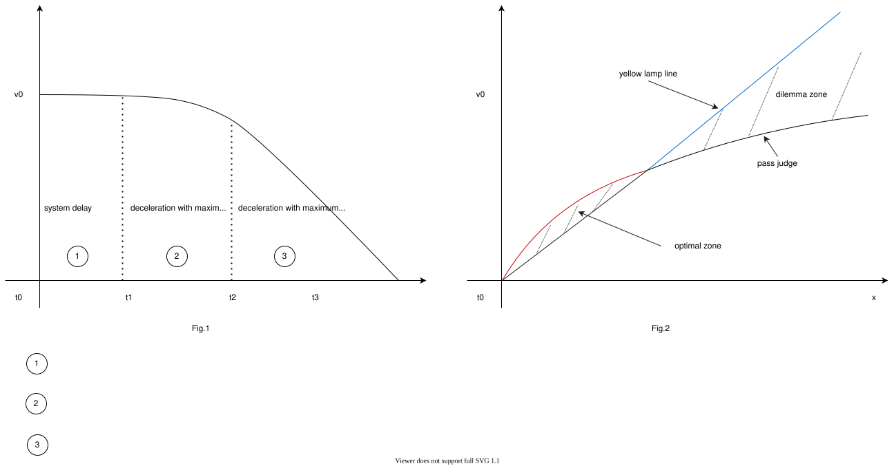

Index
Traffic Light#
Role#
Judgement whether a vehicle can go into an intersection or not by traffic light status, and planning a velocity of the stop if necessary. This module is designed for rule-based velocity decision that is easy for developers to design its behavior. It generates proper velocity for traffic light scene.

Limitations#
This module allows developers to design STOP/GO in traffic light module using specific rules. Due to the property of rule-based planning, the algorithm is greatly depends on object detection and perception accuracy considering traffic light. Also, this module only handles STOP/Go at traffic light scene, so rushing or quick decision according to traffic condition is future work.
Activation Timing#
This module is activated when there is traffic light in ego lane.
Algorithm#
-
Obtains a traffic light mapped to the route and a stop line correspond to the traffic light from a map information.
- If a corresponding traffic light signal have never been found, it treats as a signal to pass.
- If a corresponding traffic light signal is found but timed out, it treats as a signal to stop.
-
Uses the highest reliability one of the traffic light recognition result and if the color of that was not green or corresponding arrow signal, generates a stop point.
- If an elapsed time to receive stop signal is less than
stop_time_hysteresis, it treats as a signal to pass. This feature is to prevent chattering.
- If an elapsed time to receive stop signal is less than
-
When vehicle current velocity is
- higher than
yellow_light_stop_velocitym/s ⇒ pass judge(using next slide formula)
- lower than
yellow_light_stop_velocitym/s ⇒ stop
- higher than
-
When it to be judged that vehicle can’t stop before stop line, autoware chooses one of the following behaviors
- "can pass through" stop line during yellow lamp => pass
- "can’t pass through" stop line during yellow lamp => emergency stop
Dilemma Zone#

-
yellow lamp line
It’s called “yellow lamp line” which shows the distance traveled by the vehicle during yellow lamp.
-
dilemma zone
It’s called “dilemma zone” which satisfies following conditions: - vehicle can’t pass through stop line during yellow lamp.(right side of the yellow lamp line)
-
vehicle can’t stop under deceleration and jerk limit.(left side of the pass judge curve)
⇒emergency stop(relax deceleration and jerk limitation in order to observe the traffic regulation)
-
-
optional zone
It’s called “optional zone” which satisfies following conditions: - vehicle can pass through stop line during yellow lamp.(left side of the yellow lamp line)
-
vehicle can stop under deceleration and jerk limit.(right side of the pass judge curve)
⇒ stop(autoware selects the safety choice)
-
-
arrow-aware passing on yellow
This feature enables smooth passing on a yellow signal in turn lanes to avoid sudden braking. Even in situations where the system would normally select STOP (Optional Zone) or EMERGENCY STOP (Dilemma Zone), it overrides the decision and selects PASS if all the following conditions are met: - The parameter
enable_arrow_aware_yellow_passingis set totrue. - The ego vehicle is in a turn lane (left or right). - The corresponding traffic light has a static arrow bulb defined in the map. - The signal state has transitioned from "Green" to "Yellow". (Note: If the transition is from "Red + Arrow" to "Yellow", the system decides to STOP for safety as per normal logic.)
Module Parameters#
| Parameter | Type | Description |
|---|---|---|
stop_margin |
double | [m] margin before stop point |
tl_state_timeout |
double | [s] time out for detected traffic light result. |
stop_time_hysteresis |
double | [s] time threshold to decide stop planning for chattering prevention |
yellow_lamp_period |
double | [s] time for yellow lamp |
yellow_light_stop_velocity |
double | [m/s] velocity threshold for always stopping at a yellow light. |
enable_pass_judge |
bool | [-] whether to use pass judge |
enable_arrow_aware_yellow_passing |
bool | [-] whether to support arrow-aware passing on yellow |
v2i.use_remaining_time |
bool | [-] whether to use V2I remaining time information for traffic light decision |
v2i.last_time_allowed_to_pass |
double | [s] relative time against the time of turn to red - safety margin for passing through |
v2i.velocity_threshold |
double | [m/s] velocity threshold to change decision logic for V2I prediction |
v2i.required_time_to_departure |
double | [s] required time to departure for low speed scenarios to prevent unsafe passing |
Flowchart#
![uml diagram]()
Known Limits#
- tbd.